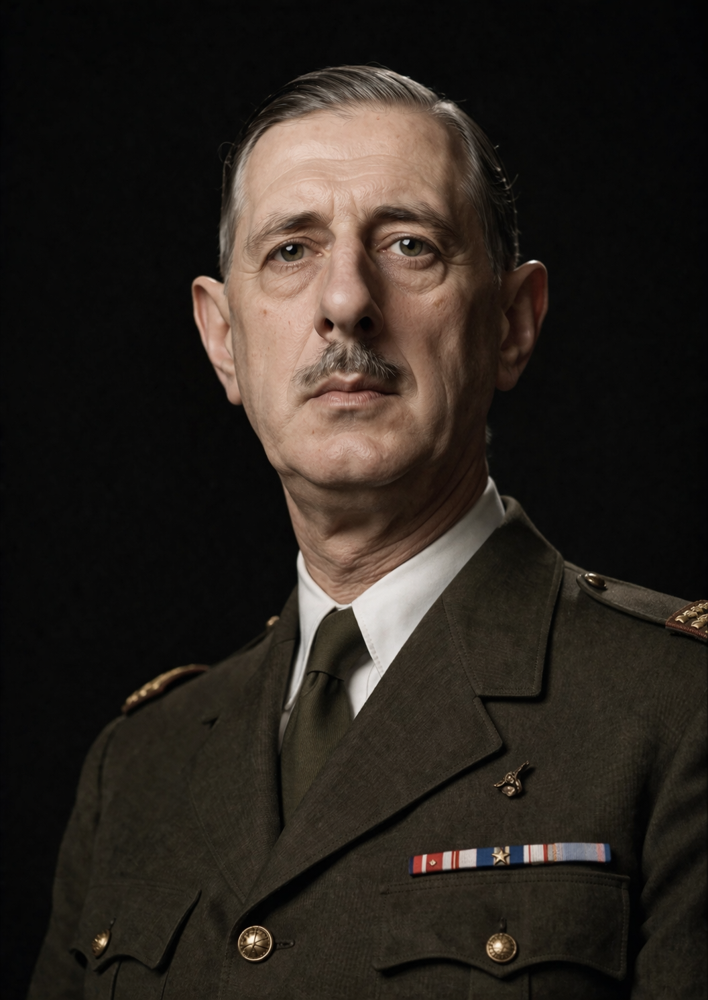

Général • Homme d'État • Président de la République
Charles de Gaulle est né en 1890 à Lille, dans une famille très attachée à la culture, à l’éducation et aux valeurs patriotiques. Dès son enfance, il s’intéresse fortement à l’histoire de la France et au rôle de l’armée dans la défense de la nation. Après ses études, il choisit la carrière militaire et entre dans l’armée française, où il développe progressivement ses idées sur la stratégie et l’organisation moderne des forces armées.
Pendant la Première Guerre mondiale, Charles de Gaulle sert comme officier dans l’armée française. Il participe à plusieurs combats importants et est fait prisonnier par les forces allemandes. Cette expérience marque profondément sa réflexion sur l’avenir militaire de la France. Après la guerre, il publie plusieurs analyses sur la modernisation de l’armée et sur l’importance des nouvelles stratégies militaires.
Lorsque la Seconde Guerre mondiale éclate, la France est rapidement vaincue par l’Allemagne nazie en 1940. Refusant d’accepter la défaite, Charles de Gaulle se rend à Londres et lance le célèbre appel du 18 juin 1940 à la radio. Dans ce discours historique, il invite les Français à continuer la lutte contre l’occupation. Il devient alors le symbole de la France libre et de la résistance contre l’Allemagne.
Après la guerre, Charles de Gaulle joue un rôle important dans la reconstruction politique de la France. Cependant, il quitte temporairement le pouvoir avant de revenir en 1958 pendant une période de grande crise politique. Il fonde alors la Cinquième République, un nouveau système politique qui renforce le rôle du président. Il devient le premier président de cette nouvelle République.
Pendant sa présidence, Charles de Gaulle cherche à moderniser la France et à renforcer son indépendance sur la scène internationale. Il mène une politique étrangère originale, visant à affirmer l’autonomie du pays face aux grandes puissances. Il prend aussi des décisions importantes concernant la décolonisation, notamment en accordant l’indépendance à l’Algérie, ce qui provoque de nombreux débats et tensions dans la société française.
Charles de Gaulle quitte le pouvoir en 1969 après un référendum perdu. Aujourd’hui, il reste l’une des figures politiques les plus respectées de l’histoire de la France. Beaucoup le considèrent comme l’homme du refus de la défaite, le défenseur de la dignité nationale et l’architecte de la stabilité politique de la France moderne.